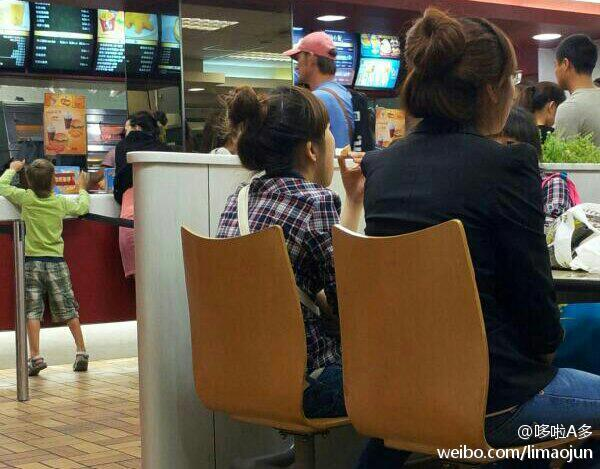

回复@王辉Ccccat:如果是我 一定不吃庸俗的红烧牛肉面~辉儿MM，来碗蟹黄鲍鱼面怎么样？ //@王辉Ccccat:回复@哆啦A多:哼！多么亲民的心愿啊@鲸歌whalessong:好想吃方便面加个蛋现在立即马上不能灯啦！
车里放着《一路向北》恰巧看到这一章节，记起了前女友，可是又什么都想不起来了，除了暧昧、朦胧的那几个月，仿佛剩下的记忆都是我俩在床上嬉闹的场景，朦胧、暧昧时我们后半夜在公园里的石凳上相拥，她让我闭上眼睛，当时我都不知道那就是我俩的初吻，接下来的一切都那么顺理成章……然后变成前女友。
[大饭店kfc]看到一女生,长着一张娃娃脸,看她旁边的同学她应该有23岁左右了,和前女友一样,那时候我觉得肯德基这种地方是十分奢侈的,去电影院看电影更是一种铺张浪费,所以我们经常买一些学校旁的路边摊的小吃,带着笔记本电脑去小旅店看一些从网上下载的日本电影,当然也是盗版的. 
[大饭店kfc看人记]15分钟之前，一个mm坐在我前方8米的位置，像是曾偷吃了禁果的少女翘首期盼着大姨妈的探望一样四处张望，我看不清她的脸，绝对不是我眼神不好，直到她回头笑了，的确是个美女，但是此时我对她兴趣全无，因为她的身边出现了一个不符合我的择偶标准的男人，我不喜欢品位低的女人。
这样的公司不健康，这样的公司肯定处于一种亚健康状态，工作一天以后，下班了谁不想回家吃饭，问问领导开会什么情况，领导反而问你，你下班了还有事儿啊？我了个擦，下班了以后有事儿没事儿不都是我自己的事儿？那万一哪天有点儿事迟到了，领导打电话给我，我反问公司有事儿啊？这样对么？
 现在立即马上不能灯啦！
现在立即马上不能灯啦！